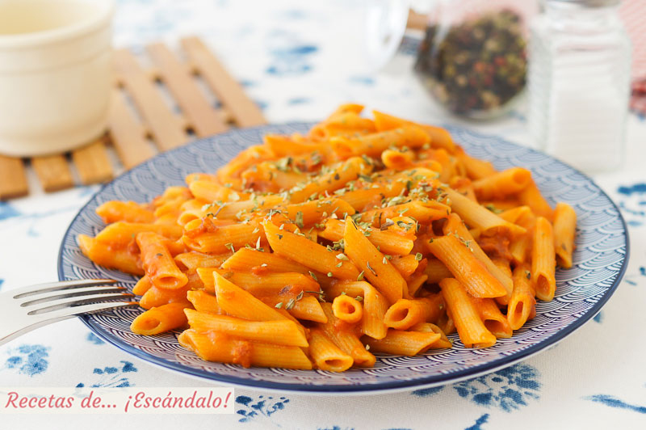

Macarrones con Tomate
Ingredientes
- 300g de macarrones
- 200g de salsa de tomate
- Queso rallado
- Sal y aceite

Proceso de elaboración
- Hervir agua con sal en una olla grande.
- Añadir los macarrones y cocer durante 10 minutos.
- Escurrir la pasta y mezclar con la salsa de tomate.
- Servir con queso rallado por encima.